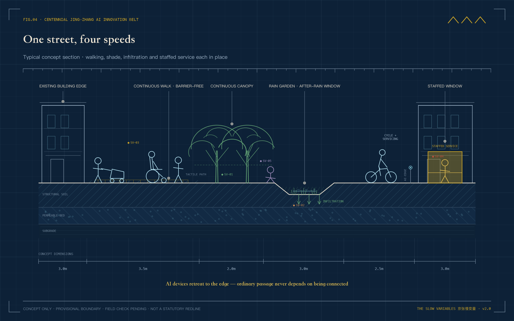

THE SLOW VARIABLES | How a City Decides How Fast AI May Move
Two clocks run through the city. AI updates by the month, while shade, soil, accessibility, local continuity, and children's independent mobility reveal change over years. Five slow variables and four release gates govern whether pilots may scale. Zhongzhiyuan measures, AI Origin deliberates, and Dazhongsi delivers. All spatial moves are reversible concepts based on provisional geometry.
THE SLOW VARIABLES
How a City Decides How Fast AI May Move
Two clocks run through the city.
The first moves fast. Models change within months, applications update within weeks, and a city pilot may move from launch to expansion inside one quarter.
The other clock is slow. A young tree takes years to cast dependable shade. Soil reveals its capacity over successive rainy seasons. Ramps, crossings, and human service counters prove useful only after many different people have used them. Local shops and children's independent routes also need ordinary time before change becomes visible.
This corridor already holds the beginning of an answer. In 1909 the Beijing–Zhangjiakou railway opened. Facing grades his locomotives could not climb through the Guan'gou ravine, Zhan Tianyou did not wait for a stronger engine; he folded the line into a switchback and traded reversals for height. From its first day, this railway understood that speed must bow to slope. More than a century later, AI enters the same corridor: models are fast, the city is slow, and the slope is still here.
Official accounts have written another sentence for this corridor. When the Beijing–Zhangjiakou high-speed railway opened on 30 December 2019 at up to 350 km/h, it was described as a leap "from 35 km/h to 350 km/h" Source. The fast century has its conclusion. This proposal asks the other question: beside a 350 km/h corridor, who guards the time of a tree, a small shop, and a child?
The Jing-Zhang AI Innovation Belt therefore faces a basic question. The fast clock can accelerate deployment. Who speaks for the slow clock?
This proposal offers a restrained answer. Every AI service entering public space must answer to five slow variables (SV-01 to SV-05): shade, soil permeability, accessible reach, local-business continuity, and children's independent mobility. A technology may pilot quickly, but expansion requires slow review. Novelty earns the right to test. Durable public value earns the right to remain.

How to read this figure. The outer ring's 40 ticks are the fast clock, one per quarter; the five coloured arcs are slow variables SV-01 to SV-05, each having covered only a short segment of its decade. The cards on the right give each variable's emergence period, and the four railway signals at the bottom are release gates G1 to G4.
How to read this proposal. There is no field-survey baseline and no invented resident testimony. Spatial limits are provisional rough geometries derived from the announcement's textual bounds and stated areas. The five slow variables are measurement frameworks, not measured site conditions. The narrative describes what should happen if a one-year pilot enters the site. Figures are conceptual illustrations rather than existing-condition photographs. Official boundaries, controls, ownership, existing buildings, utilities, and heritage data must trigger full relocation and recalculation.
Design Basis and Source List
Slow variables may look like an indicator system, but they begin as a rule of honesty. Cleared public material establishes the three scopes, three focus areas, task direction, and required design depth. It does not establish real road lines, ownership, canopy, permeability, merchant turnover, or children's routes. The first group enters as known evidence. The second becomes the one-year baseline agenda Source Spatial data Metric.
Sources have three roles. The announcement, taskbook, and formal standards control scope and professional language. Registered public sources provide heritage, park-direction, and AI-ecosystem background. Submission GeoJSON carries conceptual spatial relationships only. The approximately 11.41 km² design area and all three focus areas are provisional constraints; they do not support acquisition, ownership, engineering location, or statutory area conclusions Standard Depth.
Presentation follows the same boundary. Planning diagrams derive from package geometry and metrics. Spatial vignettes explain how future users might occupy a pilot, without claiming existing conditions, public opinion, or approved construction.
A further layer of local public material needs separate disclosure. On 11 August 2026, the regulatory detailed plan for nine blocks along the Jing-Zhang Railway Heritage Park was approved, with an official spatial structure of "one belt, one axis, two centres, multiple nodes" — Dazhongsi and Wudakou named as the two centres Source. The plan's extent is not identical to this call's scope, and neither can be applied to the other; but it confirms that this proposal's north–south spine with three workshops agrees with the official direction. The proposal cites it as background alignment only — not as the call boundary, and not as a source of statutory control. Local facts such as the heritage park's phased opening, the Qinghuayuan station restoration, and the relocation of the old Qinghe station house come from government releases and mainstream news reports, each registered in sources.json. They inform narrative and measurement planning; they do not enter the formal evidence layer and are not existing-condition findings.
Three-Level Scope Framework
Slow variables do different work at three scales.
The 43.6 km² coordinated research scope establishes shared questions. If universities, parks, communities, and service operators measure differently, their results cannot be compared. The belt-level public ledger therefore defines method, update rhythm, and objection procedure; it does not predetermine local conclusions.
The 11.4 km² overall design scope turns the method into a continuous network. One north-south public spine holds long-term observation. Three candidate east-west interfaces reconnect campuses, neighbourhoods, rail, and park. The provisional limit remains visually recessive; the important evidence is how people cross the belt Standard Depth Spatial data.
The spine has a real physical base. The Jing-Zhang Railway Heritage Park is being built in phases along the old alignment: the 2.4 km, 16.8 ha first phase from Tsinghua East Road to Zhichun Road opened in June 2023, and with the second phase completed in August 2026 the full roughly 9 km green corridor now links Xizhimen with the North Fifth Ring, keeping old rails, crossing motifs, and switchback elements Source Source. The time spine runs alongside it — and among the first slow variables to observe is the park's own growth.
The 368.4 ha focus scope makes field decisions. Zhongzhiyuan tests whether measurements are credible. AI Origin gives disagreement a place to remain. Dazhongsi checks whether promises reach ordinary life. No pilot jumps directly from laboratory performance to city-wide deployment.

How to read this figure. The pale dashed line is only the provisional boundary, not the protagonist. Read the brass north–south time spine and its chainage ticks instead: workshops 01 to 03 measure, deliberate, and deliver from north to south, while the three cyan interfaces stitch urban life back across the belt.
Coordinated Research Area: Industry and Future City Research
THE SLOW VARIABLES does not simply slow technology. It gives good technology a more credible route into the city. After proving performance, a product must answer urban questions. Does it remove an ordinary choice? Who takes over when it fails? What remains in public space after one year?
The three official positions now sit on one timeline. The Centennial Jing-Zhang Cultural Belt holds intergenerational memory. The Metropolitan AI Life Experience Belt faces everyday use. The AI Integrated Innovation Belt accommodates rapid testing. Five functions enter measurement, research, scenarios, service, and shared governance rules. The Zhongguancun Service Wing contributes academic, standards, legal, financial, and talent capacity; the Xiaoyuehe Scenario Wing contributes authorised real-world questions Source Standard.
The corridor's talent base is older than the taskbook. The 1952 nationwide restructuring left the "Eight Colleges" along Xueyuan Road — aviation, geology, mining, forestry, medicine, steel, petroleum, and agricultural machinery — which have grown into today's Beihang, China University of Geosciences, CUMT Beijing, Beijing Forestry University, and their peers Source. In the same years, Wudakou was merely the fifth level crossing of the old line out of Beijing North Station; the name survived the crossing's removal Source. The AI innovation belt does not land on empty ground: it overlies seventy years of a college district on a hundred years of railway.
Seven global references contribute methods. Barcelona Superblocks demonstrates street reallocation; Paris's 15-minute city foregrounds proximity; Helsinki Kalasatama uses residents' time; Amsterdam AMS Institute organises living labs; Toronto Quayside exposes data-governance costs; Singapore Punggol Digital District coordinates a district; and Seoul Digital Mayor's Office makes public indicators visible. The proposal borrows questions rather than scales, investment promises, or urban forms Source Depth.
The identity combines two rings moving at different speeds with five calibration marks. The outer ring moves annually; the inner ring turns quarterly. The marks appear on baseline markers, soil windows, route signs, and the annual ledger as a screen-independent public language.
Overall Design Area: Urban Renewal and Regulatory-Plan-Level Urban Design
The overall design begins with an ordinary afternoon rather than a spectacular masterplan. A person walks south under intermittent shade, encounters water after rain, crosses an east-west interface where wheelchairs and bicycles each have a continuous place, and eventually reaches a staffed service counter beside shops that remain in use.
The structure is correspondingly clear. One time spine records long change. Three civic yards process data, objections, and promises. Five observation surfaces concern canopy, soil, access, local continuity, and children's routes. Twelve scenario nodes enter through reversible components. Four conceptual land-use zones fully partition the provisional site into research and innovation, park and open space, industry and commerce, and community service Standard Spatial data Depth.
The building layer represents a conceptual footprint only. It cannot determine the fate of a real building. The strategy therefore uses four actions: retain as found, lightly repair, reversibly insert, and send for professional investigation. FAR, height, statutory density, and total floor area remain pending official data Spatial data Depth Depth.

How to read this figure. Read left to right; each step corresponds to one speed. Shade, rainwater, wheelchairs, bicycles, and children each hold a place on the same street, and the brass-lit window is a staffed counter. All widths are conceptual, not construction setting-out.
Detailed Design of Key Areas
Zhongzhiyuan | Make Measurements Credible
On the first rainy day of a one-year pilot, the soil window begins work. A sensor reports moisture change while a maintenance worker opens the section, checks ponding, and records plant condition. The two records must appear together. If digital and field judgements conflict, the pilot cannot select the more flattering result when applying to scale.
Zhongzhiyuan contains an open baseline lab, an ecological observation walk toward the Qing River, a human-review room, and a failure garden. Openness does not mean publishing personal data. Face and identifiable trajectory collection are excluded by default; access, retention, and deletion rules are written before operation Spatial data Depth.
The Qinghe direction holds a precedent the measurement workshop should remember. The old Qinghe station house, built in 1905 and weighing some 700 tonnes, was moved twice during high-speed rail construction — roughly 360 metres in total — and kept at the south-east corner of the new Qinghe station Source. A city willing to redraw construction drawings for an old station house should also be willing to wait one flood season for a measurement.
AI Origin | Give Disagreement a Place to Stay
An algorithm may propose the safest route for a child. Carers, children, wheelchair users, riders, and street workers may disagree. The deliberation yard does not hurry to erase those differences. Each route is drawn on the same table, with who objected, why, and how the proposal changed.
Shared ground floors host a slow-variable reading room, route table, accessibility audit desk, and non-digital feedback box. Static wayfinding, staffed help, and continuous accessibility are the baseline. Campus interfaces and development scale remain pending ownership and official controls Spatial data Standard.
"AI Origin" is not a name this proposal invented. In January 2026, Haidian's AI Origin Community was named among the city's first AI innovation blocks, bounded by Tsinghua University to the north and the North Fourth Ring to the south Source. Not far away, the 1910 Qinghuayuan station house still stands; its nameboard was inscribed by Zhan Tianyou himself, and the restored station opened in 2023 as a Beijing municipal cultural relic Source. The newest generation of agents meets the first self-built railway at the same street corner. Placing the deliberation yard here is no coincidence.
Dazhongsi | Check Whether Promises Are Delivered
A queue assistant can increase visits quickly. Dazhongsi asks a different set of questions. Was a human counter retained? Did older users spend less time? Could small shops remain? Did people actually use shaded seats in summer?
The delivery yard combines a slow-variable ledger wall, grievance desk, annual jury table, and small delivery market. Kept and retired pilots appear together. Retirement demonstrates that the city can stop an ineffective experiment. Four-quadrant station connections remain conceptual pending transport and ownership review Spatial data Depth.
In the approved corridor plan, Dazhongsi and Wudakou are designated the two centres Source. "Centre" is a planning word; its everyday quality is checked in a bowl of rice, a queue, and a shop door that is still open. That is exactly why the delivery yard exists.

How to read this figure. One pilot must pass through three rooms: measurements are made credible at Zhongzhiyuan, disagreements are laid on one table at AI Origin, and promises are checked against daily life at Dazhongsi. If any room is skipped, the pilot cannot scale.
AI Innovation Ecosystem, Personas, and AI+ Scenarios
An AI innovation belt serves developers and firms, as well as people who would never call themselves innovation talent. Seven user groups share the same plan. Residents need calm, shade, and low-threshold movement. Children and carers need gradual independence. Older and low-digital-literacy users need people. Operators, riders, and cleaners know where systems fail. Small merchants need continuity. Developers need compliant testing. Reviewers need comparable evidence Standard Depth.
Twelve scenario cards fall into four groups. The first three are controlled industry tests; nine address everyday services. Each records data limits, human review, and an exit condition.
| Group | Scenario | Concrete urban action | Boundary |
|---|---|---|---|
| Land | 01* Shade digital twin | Compare canopy model with summer field review | Model estimate never becomes measured fact |
| Land | 02* Post-rain permeability | Sensor reading sits beside a manual section | No drainage engineering verdict |
| Routes | 03* Accessible co-routing | Wheel, pram, and pedestrian users walk together | Voluntary participation and paper feedback |
| Routes | 04 Child independent mobility | Release independence in stages, with on-site response | No face recognition or invisible tracking |
| District | 05 Small-business continuity | Merchants voluntarily report revenue bands and needs | Never used for rent, acquisition, or credit scoring |
| Service | 06 Human-counter queue | Anonymous queue guidance with immediate staff takeover | Offline service always remains |
| Research | 07 Open red-team garden | Synthetic or cleared data supports public review | Tiered vulnerability disclosure |
| Routes | 08 Walking and cycling gap audit | Edge aggregation followed by field confirmation | No individual-track enforcement |
| Night | 09 Low-disturbance lighting | Ambient light readings; complaints trigger downgrade | No identity detection or residential intrusion |
| Culture | 10 Jing-Zhang audio guide | Local content pack with historian review | Works without location |
| Rules | 11 Public-contract explainer | Explain public clauses and named responsibilities | No case-specific legal conclusion |
| Annual | 12 Slow-variable jury | Publish aggregated evidence and protected dissent | Jury may reject expansion |
Four release gates govern expansion. G1 checks data and safety. G2 requires on-site human review. G3 handles public objection. G4 verifies that none of the five slow variables deteriorates. Failure means reduction, pause, or retirement Source Spatial data Depth.
Land Use, Building Scale, and Retain-Renovate-Demolish Strategy
Land use serves both clocks. The fast clock needs research, testing, and business service space. The slow clock needs continuous green, community service, small-scale affordable frontages, and public space that survives repeated use. Four conceptual polygons completely cover the submitted boundary with shared edges and no undefined remainder Standard Spatial data Depth.
Submitted geometry recomputes approximately 310,800 m² of conceptual building footprint. The number checks internal package relationships only. Without floors, ownership, official geometry, and regulatory controls, total floor area, FAR, statutory density, and height cannot be established. Any demolition, new-build, or adaptation list awaits field survey and professional process Metric Depth.
The design changes interfaces before structures. Mature fabric and heritage space favour retention; vacant ground floors may receive light repair; slow-variable facilities remain removable. A technology that depends on large demolition, enclosure of public space, or exclusion of existing users returns for redesign before reaching the four gates.
Transport, Rail, Municipal Infrastructure, and Public Services
The typical section begins with people. Continuous walking and accessible movement occupy the most stable band. Trees and rain gardens provide shade, permeability, and speed buffering. Cycling and delivery have a legible place. Dwelling and loading leave the primary path. Three east-west interfaces connect urban life on both sides of Zhongzhiyuan, AI Origin, and Dazhongsi Spatial data Depth.
Rail integration does not presume an unverified cross-line project. The last 500 metres from station to service first provides orientation, shade, seating, and staffed help. When AI navigation fails, static signs, a powerless route, and human assistance still work.
Utilities begin with reversible observation. Soil moisture, ponding, illuminance, and device condition may be measured; sensors do not prove drainage, electricity, fire, or compute capacity. Drinking water, toilets, shaded seating, human counters, bicycle parking, and continuous accessibility precede new screens Depth Standard.

How to read this figure. Four colours are four everyday speeds, each holding a continuous place; the curved dashed lines are east–west stitches. When navigation fails, static signs, a powerless route, and human assistance still work — redundancy is not a backup, it is the baseline.
Blue-Green Network, Public Space, and Urban Character
Conceptual green space equals 12.34% and conceptual public space equals 7.39% of the provisional site. These are internal design quantities derived from submission geometry, not existing-condition findings or statutory provision ratios Metric Metric Depth.
Blue-green performance returns to the body. Is summer shade continuous? How long does a place take to recover after rain? Can a wheelchair avoid ponding? Can a child understand a continuous route? Devices may assist measurement, but people still walk, sit, and inspect.
Three pilgrimage nodes avoid technological spectacle. The Baseline Marker publishes method and failure. The Dissent Platform preserves minority views and revisions. The Ten-Year Ledger Wall shows durable benefits and retired pilots. Honours reward reproducibility, public contribution, and timely withdrawal rather than investment or traffic Source Depth.
Renewal Projects, Implementation Policy, and Phasing
Phasing follows four seasons rather than only distant years.
Spring studies land: Zhongzhiyuan starts canopy, soil, and post-rain recovery baselines. Summer walks routes: three interfaces face thermal comfort, accessibility, and child-route review. Autumn studies the district: Dazhongsi records merchants, human services, and public-space use. Winter opens the ledger: kept, revised, and retired projects face the annual jury together.
Years 0–1 establish baselines, field audits, and three reversible pilots. Years 2–3 scale only scenarios passing all four gates and repair three interfaces. Years 4–10 use the annual ledger to fix, relocate, or remove elements. Phase geometry is a discussion area, not an investment, construction, or government commitment Spatial data Depth.
Long-term concepts include a Slow Variables Assembly, developer repair camp, and citizen jury. Every event leaves downloadable methods, limits, objections, and exit decisions. Organisers, budgets, recruitment, and policy require future authorisation.
Metrics, Area Recalculation, and Compliance Matrix
Metrics divide into two tables, and the difference is a single question: what this package can prove, and what it cannot. Every figure in the first table is recomputable. Provisional site area, conceptual building footprint, conceptual green and public-space ratios, and the three focus areas can all be re-derived from the submitted layers to the same result. The second table lists what this package honestly cannot supply. Shade, permeability, access, local continuity, and child mobility have no cleared corridor baseline; FAR and statutory building scale lack official boundaries and controls. All remain pending, with no estimated values and no promised improvement percentages Metric Metric Depth.
After one year, each slow variable receives five fields: baseline, target, repeat measurement, objection, and decision. AI does not set the target alone. Professional teams, users, and operators set thresholds together. Algorithms may detect anomalies; they do not decide how much change is worth accepting.
A first set of candidate measurement points has been circled from public material; all locations await field confirmation. Shade observation goes to the heritage park greenway and Tayuan Urban Forest Park. Soil permeability is compared against the Xiaoyuehe reach beside the corridor's east edge, where waterfront works starting in 2026 offer a before-and-after window Source. Accessibility audits begin with the Xizhimen interchange and Tayuan Park — the official park register itself notes Tayuan as "barrier-free conditions not yet available", an existing gap Source. Children's independent-route trials draw on the school-bus pilot experience; among Haidian's first pilot schools, Shangdi Experimental Primary School sits toward the corridor's north end, while coverage of schools along the corridor remains unverified Source. Retail-continuity surveys take Wudakou as the reference node: the garment market closed in 2019 has since become a new-format venue, and the difference between survival and replacement must be measured in street-front shops, not in malls; Haidian's 92 completed quarter-hour neighbourhood-life circles provide the sampling frame Source Source.
Process quantities are already explicit: 12 scenario cards, 3 industry tests, 7 user groups, 3 pilgrimage nodes, and 4 release gates. Dedicated matrices record task, standard, and design-depth completeness. The narrative explains why; structured files prove whether coverage is complete.

How to read this figure. The upper half shows the six stations every pilot must pass and the four signal gates; failing any gate means reduction, pause, or retirement. In the ledger below, recomputable design quantities are given, while all five slow variables stay "awaiting year-one baseline". The blanks are quality control, not omission.
Risk, Copyright, and Compliance
Three misreadings present the greatest risk: treating provisional geometry as an official redline, future targets as existing data, and operating concepts as government commitments. Every external version must retain “provisional constraint,” “concept proposal,” and “pending professional confirmation” Standard Source Depth.
The package also keeps a deliberate blank list, open to inspection. The constraints layer is an empty set because public material provides no verifiable statutory redlines, heritage, or utility constraints. FAR and building scale remain pending because official boundaries and controls have not arrived. Slow-variable baselines remain pending because no cleared corridor measurements exist. These blanks are quality control, not omission, and no figure, vignette, or prose may fill them in.
Data involving children, accessibility, merchants, and public service remains voluntary, minimal, de-identified, human-reviewed, and withdrawable. AI does not replace planning approval, legal advice, engineering judgement, or public decision. A technically successful service still fails if it requires privacy in exchange for access, removes the human channel, or cannot be stopped.
Codex GPT-5.1 generated the primary narrative, translation, data diagrams, conceptual vignettes, offline HTML, and drawing layouts; the visual-system redrawing and narrative revision were completed by Kimi Code. Vignettes use no third-party imagery and do not claim existing conditions. Facts come only from public or cleared material listed in sources.json. No secret map, commercial map screenshot, company mark, or unauthorised font is used. See report/copyright_statement.md.
References
The six references govern scope, design depth, land-use expression, and inclusion. The announcement and taskbook define three levels, three areas and two wings, and six Agent tasks. MOHURD and MNR documents keep urban-design recommendations, land classification, and statutory control distinct. Accessibility law constrains specific public-service scenarios; it does not prove an unverified site-wide obligation Source Standard.
None supplies official polygons, corridor conditions, ownership, or slow-variable baselines. Source registration cannot replace field work. Official attachments or a one-year baseline must trigger coordinated updates to sources, assumptions, layers, metrics, figures, bilingual reports, and self-check.
1. Beijing Haidian Branch of the Municipal Commission of Planning and Natural Resources, official open-call announcement, 2026. 2. Agent Open Call Taskbook excerpt, cleared summary, 2026. 3. MOHURD, Measures for Urban Design Management. 4. MOHURD, Measures for Regulatory Detailed Planning. 5. MNR, Land and Sea Use Classification Guide. 6. Standing Committee of the NPC, Barrier-Free Environment Construction Law.